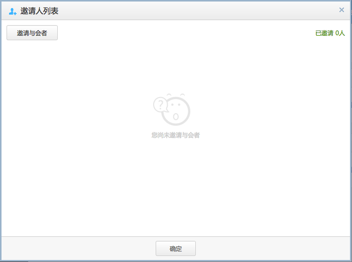
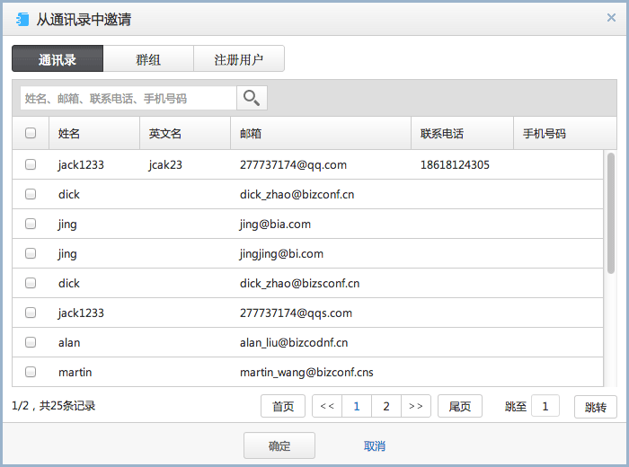
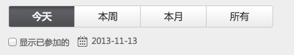
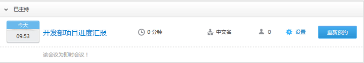
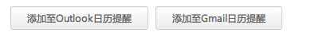

主持人登录后界面
图5 主持人登录后界面
即时会议
只需要一键操作，即可快速开始会议。
1. 选择“即时会议”

2. 弹出即时会议窗口，只需要修改会议名称即可。默认为：XXX的会议
预约会议
1. 点击“预约会议”，以创建“月度总结”周期会议为例，创建一个预约的周期会议。
2. 弹出预约会议窗口
- 第一步 基本信息
主持人密码：在会议室中，要申请为主持人时，输入此设置的密码可以成为主持人。
语音模式：网络语音为基于PC，iPad的麦克风通过网络传输的语音，电话语音为基于PSTN网络传输的语音。当选择网络语音+电话语音时，支持两种不同类型的语音模式进行互通。
公开会议：设置启用，参会者可以不登录就能查看到此会议并加入此会议。
指定参会人：所有注册用户即为系统里的企业用户都可以参加的会议，仅邀请用户即为在创建完成会议后受邀请的用户才能看到会议信息。
会议密码：设置为公开会议时，同时可以选择是否使用会议密码，使用会议密码时，用户必需输入正常的会议密码才能加入会议。
- 第二步 时间信息

定期模式：设置启用，可以创建按天，按周，按月的周期性会议。
重复范围：可以按次数重复，结束日期重复，最多不超过30次。无结束日期，系统会自动创建每次的会议。
开始时间：开始时间按用户自定义的时区为基准，但会议的时间不能早与基准时间。
- 第三步 参数信息

- 第三步 高级参数信息

- 视频功能：设置启用，会议室可以进行视频共享。开启视频功能后，同时可以在高级参数中进行视频路数的设置。
- 会议模式：
- 开启麦克风：设置启用，进入会议室，所以参会者的麦克风默认为开启状态，如果选择不启用，进入会议室后，所有参会者的麦克风为静音状态，主持人在会场可以手动开启参会者的麦克风。
- 最大音频路数：限制本次会议最大同时说话的方数。
- 最大视频路数：当开启的视频功能后，可以限制本次会议最大同时视频的方数。
- 视频画质设置：设置画质后，系统会按初始配置进行显示，当主持人/主讲人一端的网络带宽出现异常时，系统会自动适配最合适的参数，以保障会议的连贯性。
- 会议提前时间：设置提前多少分钟入会。
- 参会人权限：设置进入会议后，参会人的操作权限。
- 会议功能：选择本次会议需要使用的会议功能。
主持人模式--主持人控制会议操作，普通与会者的音频只能由主持人开启，但普通与会者可以开启自己的视频。
自由模式--普通与会者在该模式下有相应的操作权限，如开启和关闭自己的音频，视频，改变本地布局等。
低—设置启用，最大分辨率为160*120。
中—设置启用，最大分辨率为352*288。
高—设置启用，最大分辨率为640*480。
- 第四步 完成
会议预约完成后，自动发送邮件给主持人，主持人可以选择将此会议添加到邮件日历中，用于提醒主持人准时参会。
预约成功后，主持人可以立即邀请与会者，详情可参见 邀请与会者。
会议在开始时间10分钟内都没有人参加，则会议自动结束。
会议号码加入
1. 点击“会议号码加入”。
2. 弹出会议号码加入界面。输入安全会议号码，直接可以加入到指定会议。

安全会议号码，通过会议通话邮件中可以查找到或主持人直接告诉与会者。

邀请与会者
1. 预约会议完成后，自动显示在我主持的会议列表中，点击 邀请 图标。

弹出邀请人列表界面，如图所示：
2. 点击邀请与会者按钮，弹出邀请与会者界面

当鼠标滑过已邀请的用户名单上，可以进行修改或删除操作。
3. 导入通讯录成员邀请与会者，点击左上角的从通讯录选择，弹出通讯录成员列表界面
通讯录：显示自己的通讯录成员。
群组：将通讯录成员按组分类。
注册用户：已注册成为系统的用户。
4. 选定与会者后，点击发送按钮，所有邀请的用户均会收到会议通知。
加入会议
加入方式
- 会议列表加入
- 会议号码加入
- 邮件加入
您可以通过会议列表点击加入会议按钮，进入到会议中
1. 选择公开会议或我的会议，显示与您相关的会议列表。
2. 点击 加入会议 按钮。
参见 会议号码加入
1. 打开您的会议邮件通知
2. 点击“点击加入”链接。
启动会议流程
- IE插件启动会议
- 快速启动器启动会议
- 浏览器安全级别过高
- 点击快速启动后，未运行启动器
- 网络不稳定或安全防御软件阻止运行
- 添加联系人
- 批量添加联系人
1. 第一次通过IE加入会议，会弹出黄色插件提示，以IE9为例，如图：
2. 点击“安装”，弹出插件安装界面

3. 点击“安装”，进行插件安装，弹出提示界面。

4. 插件安装成功后，系统会弹出检测更新下载界面。
5. 更新完毕，即可加入会议室。
如果您IE浏览器禁止安装插件或安全系数调至较高级别，会影响插件的安装，您可以选择“快速启运器”加入会议。
IE版本不同，黄色插件提示消息栏位置不同，一般在窗口的头部或底部位置。而且不同版本提示的文字可能不一致。您可以点击允许、安装、 运行等操作即可。
1. 以火狐为例，点击“快速启动”。

2. 弹出保存启动程序。
3. 点击“保存文件”。保存完后，可以浏览器右上角处查找文件。

4. 点击“启动程序”，弹出运行界面。

5. 点击“运行”后，系统会弹出检测更新下载界面。
6. 更新完毕，即可加入会议室。
浏览器的版本不同，提示的文字可能不一致。您可以点击允许、安装、 运行等操作即可。
安装快速启动器，无法启动会议室
1. 以IE9为例，点击IE设置选项。
2. 弹出Internet选项界面，点击“安全”标签。在安全设置栏中点击“受信任的站点”。

3. 点击“站点(S)”，弹出增加信任站点界面。

4. 将会议管理平台的地址填写在区域中。（地址格式为：http://标识.confcloud.cn），点击“添加(A)”。
5. 不勾选对该区域中的所有站点要求服务器验证（https:）(S)。
6. 点击“关闭(C)”。再点击确定操作。
7. 再次进入会议即可以看到黄色插件提示消息栏。
1. 以火狐为例，点击“快速启动”。
2. 弹出保存启动程序。

3. 点击“保存文件”。保存完后，可以浏览器右上角处查找文件。

4. 点击“启动程序”，弹出运行界面。
5. 点击“运行”后，系统会弹出检测更新下载界面。
1. 可以通过有线网络进行接入，保证网络的稳定持续性。
2. 以360为例，在安装启动程序时，将其暂时保护15分钟。
我的会议
我主持的
快速查看自己主持的会议，通过不同时间段来管理自己主持的会议日程。对已主持过的会议，可以一键快速重新预约。
1. 勾选“显示已主持的”选项。
2. 显示在时间范围内，所有已主持的会议。
3. 点击 重新预约 按钮。
我参加的
快速查看自己被邀请出席的会议或公开的会议，通过不同时间段来管理您的会议日程。对您关注的会议可以添加到邮件日历中。
1. 点击会议列表中的设置按钮。

2. 选择要添加的日历提醒
通讯录
通讯录
管理您常用的联系人，在会议邀请时，可以将此联系人名单添加到与会人名单中。
1. 选择“通讯录”。
2. 单击“添加联系人”，弹出联系人信息界面。

3. 单击“确定”。
邮箱：当邮箱邀请用户参加会议时，将会议信息以送至此邮箱，用于通知该用户。
联系电话：当电话邀请用户参加会议时，系统默认拨叫此号码，邀请用户加入会议。